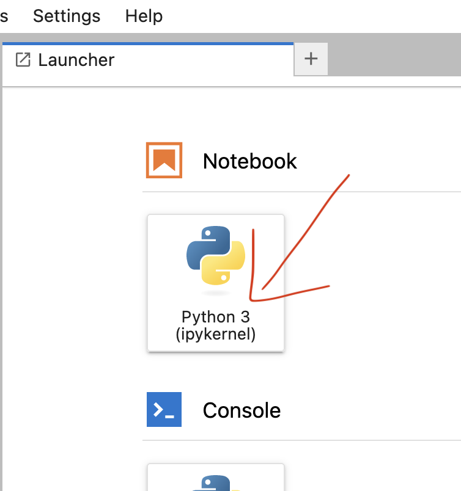
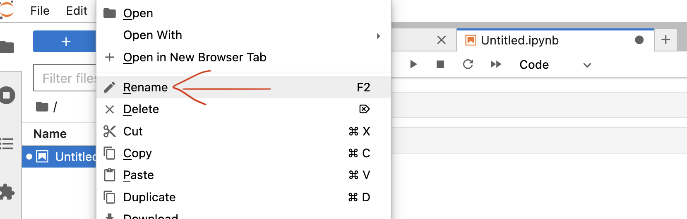
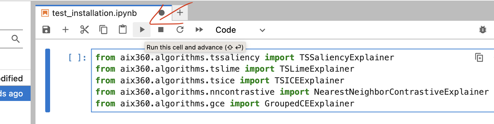

Setup Instructions#
We encourage and recommend the audience to follow the below instructions and prepare their environment prior to the tutorial.
System Requirements#
Please prepare your system to ensure that the following software requirements are met, in order to run the demo notebooks in this tutorial.
Python 3.10
Terminal (or relevant environment such as git bash shell, Windows Terminal etc. to execute commands throughout the tutorial).
Internet connection (must be able to download from the internet.)
Kaggle account (to download data)
Once the requirements above are met, follow instructions in Installation to prepare your python environment for this demo.
Installation#
Python packages often pose difficulties in resolving dependency conflicts or get corrupted with conflicting dependency versions. So, we strongly encourage the audience to use virtual environments for this tutorial either using Conda or Python.
Demo Folder#
Create a folder to keep all demo content in an isolated place in your file system.
mkdir aix360_demo
cd aix360_demo
Python 3.10 is a must for this tutorial. Installing python 3.10 is beyond the scope of this tutorial. We have provided python/conda installation steps for reference. If you are interested in using Conda, you can refer to Install Conda. Otherwise, please refer to Install Python.
Install Python#
Following are few popular approaches to install python. You can use one of these approaches to install Python.
Download and install the python binaries from this link.
If you need to maintain multiple python versions, use pyenv.
Use Conda.
Type the below command in Terminal to verify Python installation.
python -V
It must show python version as 3.10 without errors.
Now, install aix360 library using these instructions.
Install Conda#
Refer to this link to install Conda.
Now, install aix360 library using these instructions.
Install AIX360#
This section installs all the required python dependencies for this tutorial. If you are using vanilla Python (not Conda), follow the below instructions. If you are using conda based environments, follow Conda instructions.
PIP#
Create virtual environment using venv.
Paste the below commands in Terminal and execute them sequentially.
python -m venv aix360_kdd
source aix360_kdd/bin/activate
Conda#
Create virtual environment using Conda.
Paste the below commands in Terminal and execute them sequentially.
conda create --name "aix360_kdd" python=3.10 -y
conda activate aix360_kdd
Now that the virtual environment is created, install aix360 and other dependencies. Tensorflow 2.9.3 cannot be installed on Mac with M1 chip. To install aix360 on M1 chip Mac, follow these instructions. All other users can run the below command to install aix360.
Paste the below commands in Terminal and execute them sequentially.
python -m pip install xlrd huggingface-hub jupyterlab aix360[tssaliency,tsice,tslime,nncontrastive,gce]==0.3.0
M1 Chip#
Paste the below commands in Terminal and execute them sequentially.
python -m pip install tensorflow-macos tensorflow-metal
python -m pip install xlrd huggingface-hub jupyterlab aix360[tssaliency,tsice,tslime,gce]==0.3.0
Now, your environment is ready to use aix360’s time-series explainers. This tutorial uses Jupyter Lab to run and visualize the explanations. Follow Jupyterlab section to start Jupyter lab.
JupyterLab#
Start jupyter lab using the below command.
jupyter lab
The Jupyter lab server starts at http://localhost:8888/lab and launches the page in a browser. If it is not launched the browser, paste and run the url in browser to start Jupyter lab server.
Verify Installation#
To verify the installation, open a new notebook from launcher. 
Right click on the new file Untitled from the sidebar and rename to :
test_installation

Paste the below content into a cell.
import warnings
warnings.filterwarnings("ignore")
from aix360.algorithms.tssaliency import TSSaliencyExplainer
from aix360.algorithms.tslime import TSLimeExplainer
from aix360.algorithms.tsice import TSICEExplainer
from aix360.algorithms.nncontrastive import NearestNeighborContrastiveExplainer
from aix360.algorithms.gce import GroupedCEExplainer
Execute the cell. 
Now, go to first demo use-case on Engine Fault Detection.